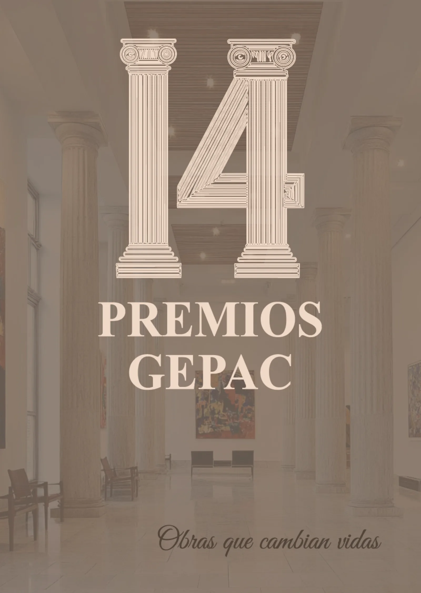

Los XIV Premios GEPAC reconocerán iniciativas que mejoran la vida de pacientes con cáncer el 23 de abril de 2026 en Madrid.
Los XIV Premios GEPAC reconocerán las “Obras que cambian vidas” en oncología La colaboración entre pacientes, profesionales sanitarios, investigadores, instituciones y sociedad civil es un elemento clave para mejorar la vida de las personas con cáncer. Con este objetivo, el Grupo Español de Pacientes con Cáncer (GEPAC) celebrará la XIV edición de los Premios GEPAC, una iniciativa que busca reconocer públicamente a quienes trabajan cada día para transformar la realidad del cáncer en nuestro país. Bajo el lema “Obras que cambian vidas”, esta nueva edición pone el foco en la importancia del esfuerzo colectivo y de las sinergias entre los diferentes agentes del sistema sanitario y social que contribuyen a mejorar la calidad de vida de los pacientes oncológicos. El evento se celebrará el 23 de abril de 2026 a las 19:00 horas en la Universidad CEU San Pablo de Madrid, en una jornada que reunirá a pacientes, profesionales sanitarios, entidades, investigadores y representantes institucionales para reconocer proyectos e iniciativas destacadas desarrolladas durante 2025.
Un reconocimiento al compromiso con los pacientes con cáncer Los Premios GEPAC nacen con el objetivo de visibilizar y reconocer el trabajo de personas, organizaciones e instituciones que contribuyen al avance en la atención oncológica y a la mejora de la calidad de vida de los pacientes y sus familias. En esta décimocuarta edición se entregarán galardones en once categorías, que abarcan ámbitos clave del proceso oncológico, desde la investigación hasta la sensibilización social. Entre ellas destacan: • Investigación social y científica en oncología • Trayectoria institucional más destacada en oncología • Profesional de la salud más relevante en el ámbito oncológico • Labor periodística y literaria comprometida con la normalización social del cáncer • Responsabilidad social corporativa • Voluntariado y participación activa • Campaña de sensibilización más relevante en cáncer Estas categorías reflejan el carácter multidisciplinar de la lucha contra el cáncer y el papel fundamental que desempeñan distintos actores en la mejora del abordaje de la enfermedad.
Un espacio para visibilizar historias que transforman la experiencia del cáncer La iniciativa incorpora también el XI Concurso de Relatos GEPAC, una propuesta que invita a pacientes, familiares y ciudadanos a compartir sus experiencias vinculadas al proceso oncológico. En esta edición, los relatos deberán abordar cómo determinadas personas han influido positivamente en el proceso de la enfermedad o cómo han contribuido a acompañar y transformar la experiencia del cáncer. El relato ganador se anunciará durante la ceremonia de entrega de premios y recibirá un reconocimiento especial. Con esta iniciativa, GEPAC busca dar voz a las historias humanas que hay detrás de la enfermedad, fomentando la empatía social y la comprensión del impacto real del cáncer en la vida de las personas.
Un evento para impulsar la visibilidad del movimiento asociativo Los Premios GEPAC se han consolidado como una plataforma para poner en valor el trabajo conjunto de pacientes, profesionales e instituciones, al tiempo que refuerzan el papel del movimiento asociativo en la defensa de los derechos de las personas con cáncer. A través de esta iniciativa, GEPAC pretende seguir avanzando en su misión de representar los intereses de los pacientes, promover la cooperación entre organizaciones y contribuir a que el cáncer ocupe un lugar prioritario en las políticas sanitarias. La ceremonia del 23 de abril será, por tanto, un punto de encuentro para reconocer el compromiso de quienes trabajan cada día por una atención oncológica más humana, equitativa y centrada en las personas.
XIV Premios GEPAC: obras que cambian vidas Los XIV Premios GEPAC reconocerán iniciativas que mejoran la vida de pacientes con cáncer el 23 de abril de 2026 en Madrid.
Contenido elaborado por GEPAC · XIV Premios GEPAC “Obras que cambian vidas” https://www.gepac.es/